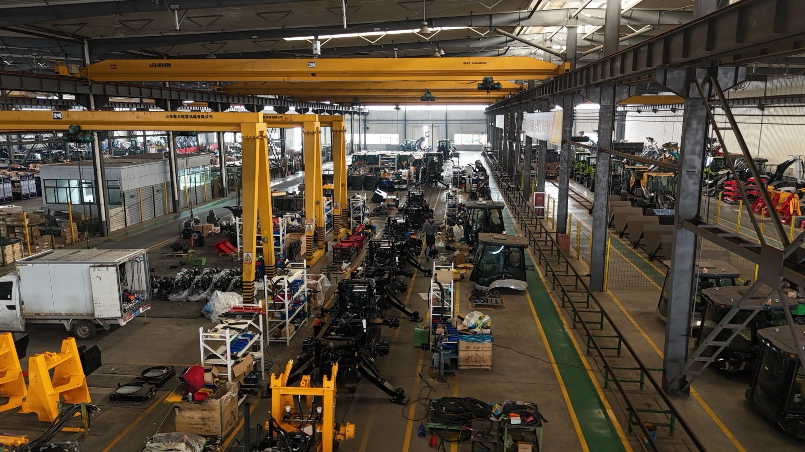
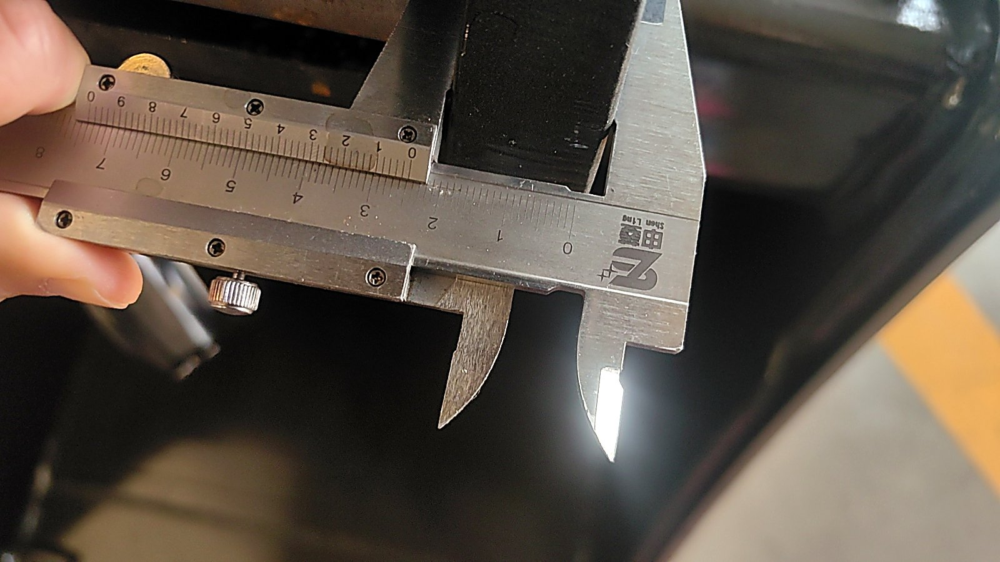

This is the line itself, seen from the walkway above: chassis in sequence, overhead cranes moving, each unit picking up its own configuration as it moves. When a dealer asks whether we can build their brand, this room is the honest answer.
What "OEM" Actually Means on a Backhoe Loader
The letters stand for Original Equipment Manufacturer, but the phrase has drifted a long way from its original meaning. In practice, when a dealer asks about OEM on construction machinery, they usually mean one of three things — and they often do not realise they are three different requests until the quotation comes back and it does not match what they imagined.
The first confusion is about cost. Many dealers approach OEM expecting it to be cheaper, because they assume buying directly from a factory under their own brand removes a layer of margin. It does the opposite. Anything you change costs money: the paint, the nameplate, the printed manual, the packing. OEM is not a discount channel. It is a differentiation channel, and you pay for differentiation.
The second confusion is about design ownership. Some dealers arrive with photographs of a competitor's machine and ask for the same thing with their own name on it. That is not OEM. That is copying, and it is a legal problem that will eventually land on the dealer, not on the factory that quietly agreed.
The third confusion is about who does the engineering. If the factory designs the machine and you put your name on it, that is closer to ODM — original design manufacturing. If you bring the drawings and the factory builds to them, that is true OEM in the classic sense. Most dealers are not equipped for the second, even when they think they are.
None of this means OEM is a bad idea. It means the first job is to decide which conversation you are actually having.
The Three Levels of OEM Commitment
In practice, I see dealers doing OEM at three depths. They are not ranked by quality — they are ranked by how much of the machine you are genuinely controlling, and how much risk you are carrying.
Level 1 — Badge: Your Name on an Existing Machine
The machine is a standard production model. What changes is the paint colour, the nameplate, the decals, the manual cover, and sometimes the seat or the beacon light. Nothing inside the machine changes. This is the fastest and cheapest form of OEM, and for a dealer testing whether their market will accept their own brand, it is often the right place to start.
What you get is market presence: your name on a working machine, in front of customers, with your logo visible from thirty metres. What you do not get is a product that is different from the machine the next dealer is selling three cities away. If your whole strategy is brand recognition, that may be enough. If your strategy is "customers can only buy this from me," it is not.
Level 2 — Configuration: Your Specification From a Menu
This is where most serious dealers end up, and it is usually the best value for the effort. The machine is built on an existing platform, but the configuration is yours: cabin type, hydraulic flow and control pattern, joystick versus lever controls, tyre type and tread, bucket capacity, attachment coupler, lighting package, air conditioning or heating, seat, mirrors, counterweight, and the attachment set that ships with it.
This level requires real work from you rather than from the factory. You need to know what your customers actually do with a machine — trenching in hard ground, loading loose aggregate, working in palm plantations, cleaning drains, moving pallets around a yard — and translate that into a written specification. Most dealers who fail at this level fail because they copied another market's specification instead of writing their own.
Level 3 — Design: Changing the Machine Itself
This means structural change: different dimensions, a longer dipper, a heavier counterweight, a different loader geometry, a modified cooling package for a hotter climate, a chassis adapted to a locally common attachment standard. It is the highest-risk level and the only one that can produce a genuinely unique product.
Before you ask a factory for Level 3, you should already have three things: engineering capability on your side or access to it, a willingness to inspect and approve a prototype rather than trusting a drawing, and enough working capital to carry tooling and trial costs before a single machine is sold. A dealer who asks for Level 3 without those three things is not commissioning a product. He is commissioning an expensive lesson.
The real question is not "can this factory do OEM." It is "which of the three levels am I actually asking for, and am I equipped to carry the risk at that level?"

Changing what goes into the machine is a production decision, not a sticker decision. Each variation you add has to be carried through assembly, testing, and the spare parts catalogue afterwards.
Five Questions That Reveal Whether a Factory Can Really OEM
Not every factory that says yes to OEM can actually do it. Some are trading companies that will pass your order to whoever can build it. Some assemble machines from kits and have no control over what goes into them. Some can produce a machine but have never managed a branded order, with its nameplates, its manuals, its packing marks, and its audit trail. These five questions separate the ones who can from the ones who are hoping the question never comes.
- Who draws the drawings? Ask how many engineers work in the factory's own technical department and what they are responsible for. A factory that designs its own structures, hydraulic circuits, and electrical layouts will answer with names, roles, and examples. A factory that buys finished designs from elsewhere will answer with generalities — or tell you the machines "follow the international standard," which is not an answer.
- Will my change enter the bill of materials? This is the single most revealing question on the list. A real OEM order updates the BOM — the master list of every component — so that your machine, and the spare parts for it, can be traced back to your specification two years later. A factory that treats OEM as a final-stage cosmetic operation will not update anything. Guess what happens when you need a part that only exists on your version.
- Can I see the whole line, from steel plate to finished machine? Not the showroom, not the photo wall — the cutting, the welding, the machining, the painting, the assembly, and the test bay. If the factory cannot show you all of it, ask which stages are subcontracted and who controls quality there. Subcontracting is normal and not automatically bad. Not knowing about it is bad.
- How is my design and my brand protected? Who inside the factory can see your drawings? Where are your decals and nameplates stored, and who prints them? What prevents your specification from appearing on a machine sold to somebody else? A factory with a real process will answer this in specifics. A factory without one will say "don't worry."
- Can I speak to a dealer you already build under their own brand? Not a reference letter — a conversation, ideally with their technical person, about how the factory handled the first order, the first problem, and the first spare parts request. A factory that genuinely does OEM will have someone they are comfortable introducing. A factory that does not will explain why that is difficult.
A good factory is not afraid of these questions. It is afraid of the dealer who never asks them, because that dealer will discover the answers somewhere much more expensive — usually in front of his own customer.
MOQ Is Not a Number, It Is a Negotiation
The minimum order quantity is the point where most first-time OEM conversations end. A dealer asks, hears a number larger than he planned, decides OEM is out of reach, and goes back to buying standard machines. That is a shame, because MOQ is usually the most negotiable item on the table.
Understand why the number exists. It is almost never about the factory's profit margin. It is about changeover cost, and changeover cost has physical causes:
- Painting. Changing colour means flushing and cleaning the line. A colour that only one customer uses has to be worth the interruption.
- Nameplates and decals. Custom tooling and print runs have their own minimum, and they sit in inventory until they are used.
- Packing and marks. Printed cartons, stencils, and shipping marks are produced in batches, not one at a time.
- Purchased components. Any part that is specific to your specification has to be bought from a supplier who has their own minimum.
Once you understand that list, the negotiation changes shape. You are no longer arguing about a number. You are looking for ways to reduce changeover cost and move it away from the first order.
- Split the order. Let the standard machine be built in the normal batch, and treat only your specific changes as the small lot. Your actual variation may be far smaller than the whole machine.
- Print once, store at the factory. Order a year's worth of nameplates, decals, and packing marks in one run and let the factory hold them, releasing them against each order. This is normal practice and it usually removes the largest part of the minimum.
- Trade a prototype for a locked price. Offer to take one machine first for your own evaluation, and ask for the price you will pay on the next units in exchange. This gives the factory a reason to accept a small first order without giving up margin on a large one.
- Use your difference as leverage. A specification that is genuinely new gives the factory something too: a reference product for a market they do not currently serve. Say so. It is a real argument, and it is true far more often than dealers expect.
What determines a realistic minimum is the depth of your change, not the number of machines. A dealer changing paint and decals and a dealer changing the loader geometry should not expect the same answer.
How Customization Depth Changes Price and Lead Time
Dealers often ask what a change "costs" and forget to ask what it costs in time. Lead time is usually the more expensive of the two, because it is the one that keeps your order from being sold while your competitor's is already in his yard.
| Level | What typically changes | Lead time impact | Where the cost sits |
|---|---|---|---|
| Badge | Paint colour, nameplate, decals, manual cover, minor fittings | Smallest — usually absorbed into the normal build | Paint, tooling for plates and decals, print runs |
| Configuration | Controls, hydraulics, cabin, tyres, buckets, coupler, attachment set | Moderate — affected by component sourcing and assembly sequence | Components, extra assembly steps, documentation |
| Design | Structure, dimensions, cooling, mounting standards, new geometry | Largest — tooling, prototype build, testing and approval | Engineering, tooling, trial builds, verification |
There is one warning sign worth memorising. If a factory tells you that any change is easy, fast, and no problem at all, you are not talking to an engineer. Real engineering change has real cost in time, and a factory that cannot describe that cost either does not understand it or does not want you to. The useful conversation is not "how fast can you do it" but "what has to happen before the first one is right."
Three questions will get you that answer:
- How much longer will the first unit take compared with the fifth?
- Will a prototype be built and inspected, or does the first order go straight to production?
- Which components become non-standard because of this change, and how do I order them later?
The IP Conversation That Has to Happen Before the First Order
Intellectual property sounds like a topic for large corporations, so small and mid-sized dealers tend to skip it. That is exactly the size of business where it matters most, because you have the most to lose relative to your resources. There are four things to settle, and all four should be in writing before money moves.
1. Brand Licence
Confirm where your brand will appear: on the machine itself, on the nameplate, in the manual, on the packing, and in marketing material. Decide whether the machine carries a visible statement such as "manufactured by [factory] for [your brand]" — some markets require the actual manufacturer to be identified, and it is much easier to agree that in advance than to add it afterwards. Also agree what happens to machines already sold if the relationship ends.
2. Design Ownership
If you provide drawings, dimensions, or a specification, say clearly that ownership stays with you. If the factory improves on your idea, decide in advance who owns the improvement and whether the factory may use it for other customers. This is the clause most often left vague, and the one most often regretted.
3. Confidentiality
Ask who internally can see your drawings and your specification, and how the information is stored. Ask who prints your decals and nameplates, and whether the spare ones are secured. If the answer is "the print shop down the road," you have learned something important.
4. Exclusivity and Non-Compete
If you are granted an exclusive territory, understand exactly what it is exchanged for and what happens if you cannot meet it. If you are not granted exclusivity, ask directly what prevents the factory from selling your specification to somebody else in your market. Either answer is acceptable. Not getting an answer is not.
A contract is not worth much for what it promises. It is worth a great deal for what it prevents. If a factory refuses to sign confidentiality and ownership terms, the problem is not that it cannot write them. It is that it does not want to be bound by them.
What Changes — and What Does Not — After Your Name Is on the Machine
This is the part dealers underestimate emotionally, even when they understand it commercially. The day your nameplate goes on the machine, the first telephone call after a breakdown goes to you, not to the factory. That is the deal, and it is a fair one — you are the one who holds the customer relationship. But it is worth being precise about what changes and what does not.
What changes: first-line responsibility for service and warranty; brand reputation, which now attaches to your name every time the machine is seen working or not working; the need for at least basic technical capability on your side; and the need for a parts and consumables plan that does not depend on factory proximity.
What does not change: the design standards the machine was built to; the inspection process it went through; the specification of its components; and the factory's own quality control. Your badge does not make the machine better or worse. It changes who is answerable in your market.
Four things are worth aligning in writing before the first shipment:
- The part number system. Keep the factory's part numbers somewhere on the label, even if you add your own. When your technician orders by your number and the factory supplies by theirs, somebody has to maintain the mapping — and it should be both of you, not just you.
- Documentation and language. Manuals, warning labels, and nameplates have to satisfy the rules of your market, including the language your operators actually read. Send those requirements before the build, not after the container is loaded.
- The warranty chain. The factory warrants components to you; you warrant the machine to your customer. Those two are not the same, and the gap in the middle is where disputes live. Agree in advance how "abuse versus defect" will be judged, and who pays for what when it is unclear.
- Technical support access. Who answers your technician's question, in what language, at what hours, and how quickly. Get a name, not a general inbox.
Your name on the machine does not transfer capability. But capability can be borrowed — through training, documentation, and a factory that answers the phone. Insist on the borrowing arrangement as part of the deal, not as a favour afterwards.

A part number is a promise that the same thing arrives next time. That promise only holds if somebody measured it the first time — and if your specification is written into the record, not just remembered.
Three Things First-Time OEM Buyers Underestimate
These are not the dramatic risks. They are the ordinary ones that cost real money and are almost never in the initial budget.
1. Packing, Marking, and the Photographs Nobody Took
Once the machine leaves the factory, you are the one standing in front of it, and photographs are your only evidence. Insist on a standard set before loading: the machine with its nameplate visible, the attachment set laid out and counted, fragile or exposed components protected, and the loaded container with the marks readable. It is not a matter of distrust. It is the same discipline you would expect from any supplier, and a factory that finds the request strange has probably never had to defend a shipment.
2. Destination Compliance
Emissions requirements, certification documents, nameplate information, and manual language all vary by market, and some markets require the importer or local agent to be identified on the machine or in the documentation. These requirements are easy to satisfy during production and expensive to satisfy afterwards. Hand them over as a written list before the order is scheduled, even if they look obvious to you.
3. The Cost of the First Batch
The first container is rarely the profitable one. It is the calibration batch — the one that reveals what your specification got wrong, what your customers actually ask for, and which spare parts they need first. Budget for it as a learning cost rather than a sales cost, and pair it with a sensible set of consumables and fast-moving parts inside the same container, while the freight is already paid. Waiting until a machine is standing still is the most expensive way to buy a filter.
If you want to go deeper on that last point, my article on what to order with the machine works through which parts are worth carrying from day one.
The Part of This That Is On Us
It would be easy to write a guide that puts every risk on the dealer's side. That would be dishonest, because factories create dealer problems too, and I would rather name the ones I have seen than let you discover them.
Factories chase large orders and quietly deprioritise the small dealer who is still proving himself. Factories treat a dealer's brand as one more label rather than as the asset the dealer is actually building. Factories give an optimistic delivery date because the honest one is harder to say. Factories let a part number change without telling anybody, and then the dealer's technician spends an afternoon on the phone trying to identify a component that no longer exists under that number. I have seen all four, and none of them are caused by malice. They are caused by a factory that is organised around its own production schedule instead of around its customer's business.
I can only tell you how I try to work. If a date is not real, I will not give it to you. If your drawing cannot be protected properly, I will say so before you send it. If a change will not deliver what you expect, I will tell you while it is still an idea rather than after it is a container. And if you want to verify any of this rather than take my word for it, come and look — ask for the production record, ask for video of your machine being built, or send your own engineer to walk the line. A factory that is genuinely organised around its customers will not mind being checked. I would rather be checked than trusted blindly.

OEM is a relationship between two businesses that both have to still be standing in five years. That kind of relationship is easier to build in person — and the door is open.
The Point of All This
OEM is not a way to buy a machine cheaper under your own name. It is a way to translate what you know about your market into a product your competitors cannot buy, and to build a brand that belongs to you rather than to your supplier.
The dealers who do it well all follow a similar path. They start with a badge, learn what their customers really need, write a specification that comes from their own market rather than from somebody else's, and move into configuration once they understand what they are asking for. They settle the brand, ownership, and confidentiality questions early, while everyone is still friendly. And they treat the factory as a partner with responsibilities rather than as a vendor with a price.
If you are weighing up OEM for your market, write to me with three things: where you sell, what your customers keep asking for that you cannot currently offer, and what you want the machine to do differently. I will give you a straight answer about what we can build, what it would really take in time, and the parts we are not the right factory for. The last one is the answer most suppliers leave out, and it is usually the one that saves a dealer the most money.
Thinking About Selling Backhoe Loaders Under Your Own Brand?
Tell me your market, your customers, and what you want the machine to be. I will tell you honestly which level of OEM fits — and where the real costs and lead times sit before you commit to an order.
Talk to Vivian on WhatsApp